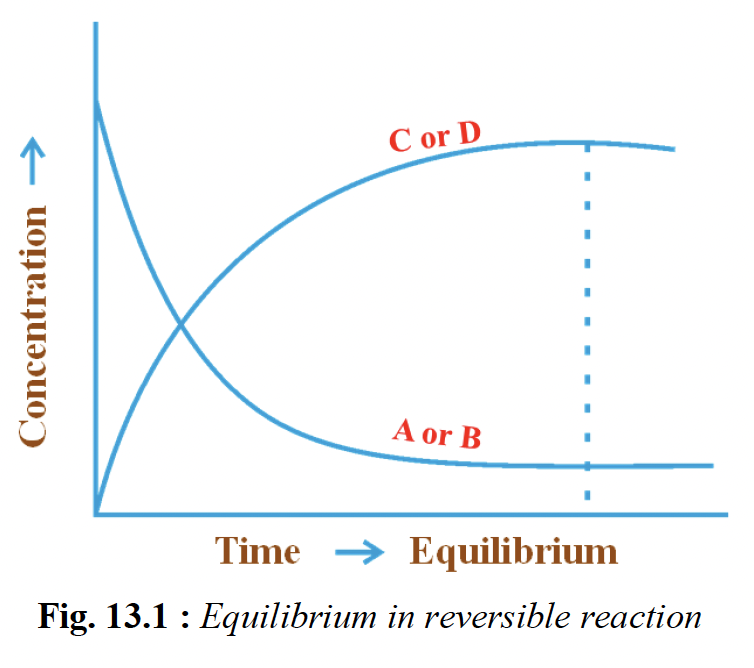

Kc: equilibrium constant in terms of molar concentration
Kp: equilibrium constant in terms of partial pressure
Ka: acid ionisation constant
Kb: base ionisation constant
Kw: ionic product of water
Ksp: solubility product
Q: reaction quotient
Δng: moles of gaseous products − moles of gaseous reactants
ΔG°: standard Gibbs energy change
R: gas constant
T: absolute temperature in kelvin
S: molar solubility
\(\alpha\): degree of dissociation
pKa: \(-\log K_a\)
```
1. Equilibrium expression: write it cleanly before doing anything
else
For \(aA+bB \rightleftharpoons cC+dD\), write
\(K_c=\dfrac{[C]^c[D]^d}{[A]^a[B]^b}\) or the matching \(K_p\)
form first; many PYQs become one-line substitutions once the
balanced equation is written correctly.
In 1:1:1:1 or similar problems, assign the shift as \(x\), change
each species according to stoichiometry, then substitute only the
equilibrium values into \(K_c\).
If equal initial amounts of reactants and products are given, do
not guess the direction blindly; use \((\text{initial} \pm x)\)
carefully and let the value of \(K\) decide the shift.
For reactions such as \( \mathrm{PCl_5 \rightleftharpoons PCl_3 +
Cl_2} \), if one product amount at equilibrium is given,
immediately use stoichiometry to get the other product and the
remaining reactant.
2. Gaseous equilibrium: the few formulas that keep
repeating
Use \(K_p=K_c(RT)^{\Delta n_g}\), where \(\Delta n_g\) is only for
gaseous species. If \(\Delta n_g=0\), then \(K_p=K_c\); if
\(\Delta n_g<0\), then \(K_p/K_c=(RT)^{\Delta n_g}\) gives an
inverse power.
When all equilibrium partial pressures are equal, substitute the
same \(p\) everywhere; the final result depends only on the net
exponent difference, so \(K_p=(p)^{\Delta n_g}\).
For \(A \rightleftharpoons 2B\) starting with pure \(A\),
mole-fraction partial pressures are the cleanest route. A very
useful special result is for \(N_2O_4 \rightleftharpoons 2NO_2\):
\(K_p=\dfrac{4\alpha^2 p}{1-\alpha^2}\), so
\(\alpha=\sqrt{\dfrac{K_p/p}{4+K_p/p}}\).
For \(2SO_2+O_2 \rightleftharpoons 2SO_3\), if
\(p_{SO_2}=p_{SO_3}\), then the expression collapses to
\(K_p=\dfrac{1}{p_{O_2}}\). Such equal-pressure conditions are
meant to simplify the algebra, so use them immediately.
3. How equilibrium constants change when the equation is
changed
If the reaction is reversed, the new equilibrium constant becomes
\(1/K\). If every coefficient is multiplied by \(n\), the new
constant becomes \(K^n\); if divided by \(n\), it becomes
\(K^{1/n}\).
When the target reaction is built by adding or scaling given
equations, do the same operations on their equilibrium constants:
multiply the constants and raise each one to the same power as the
corresponding scaled equation.
This is one of the easiest places to lose marks by doing chemistry
correctly but algebra carelessly, so convert the target reaction
first and only then touch the constants.
4. Fast meaning of \(K\), \(Q\), and \(\Delta G^\circ\)
At constant temperature, \(K\) changes only with temperature, not
with pressure, concentration, or catalyst. A catalyst only helps
the system reach equilibrium faster.
The bridge formula to remember is
\(\Delta G^\circ=-RT\ln K=-2.303RT\log K\). If
\(\Delta G^\circ\) is negative, then \(K>1\); if \(\Delta
G^\circ\) is positive, then \(K<1\).
In numericals based on \(\Delta G^\circ\), convert kJ to J before
substitution. This small unit error can ruin an otherwise correct
solution.
If a question gives \(Q\), compare it with \(K\): \(Q<K\) means
forward shift, \(Q>K\) means backward shift, and \(Q=K\) means
equilibrium.
5. Le Chatelier shortcuts that are actually useful in
MCQs
Pressure increase shifts a gaseous equilibrium toward the side
with fewer moles of gas, so products are favoured only when
\(\Delta n_g<0\). This is the quickest way to handle
pressure-based equilibrium questions.
Temperature is the only ordinary factor here that changes \(K\).
Concentration and pressure can change the position of equilibrium,
but not the value of the equilibrium constant if temperature stays
fixed.
For industrial equilibria such as \(N_2+3H_2 \rightleftharpoons
2NH_3\) and \(2SO_2+O_2 \rightleftharpoons 2SO_3\), link the shift
directly to gaseous mole count and reaction heat rather than
memorising isolated statements.
6. Heterogeneous equilibrium: the standard omission rule
In heterogeneous equilibrium, pure solids and pure liquids are
omitted from the equilibrium expression because their active mass
is taken constant. So for \(A(s)\rightleftharpoons B(s)+C(g)\),
write \(K_c=[C]\) and \(K_p=P_C\).
This omission is not optional and not based on “small amount”; it
is based on phase. Include gases and dissolved species, omit pure
solids and pure liquids.
7. Acids, bases, and oxyacid basics that repeatedly get
asked
Lewis base means electron-pair donor. \(NH_3\) is a Lewis base
because nitrogen has a lone pair available for donation.
For oxyacids,
basicity = number of ionisable H attached to O as –OH, not the total number of H atoms in the formula. So \(H_3PO_3\)
is dibasic, \(H_3PO_2\) is monobasic, and \(H_2SO_4\) is dibasic.
For oxoacids of the same type \(HOX\), acidity increases with
electronegativity of the central atom because the \(-I\) effect
weakens the O–H bond; hence \(HClO > HBrO > HIO\).
If the question is about di-, tri-, or polybasic acids, count
replaceable protons only. This is a concept question disguised as
a memory question.
8. Water, pH, and acid-base mixing numericals
Neutral water does not always have pH 7. As temperature rises,
\(K_w\) increases, so the pH of pure water can fall below 7 and
still remain neutral because \([H^+]=[OH^-]\).
For strong acid–strong base mixing, the safest order is: convert
pH or pOH to molarity if needed, convert to moles, subtract excess
\(H^+\) or \(OH^-\), divide by final total volume, and only then
calculate pH or pOH.
Never decide the final pH from concentration values before doing
mole subtraction. Mixing is a mole problem first and a pH problem
only after that.
9. Buffers: the one formula and the one condition to
remember
For an acidic buffer, use
\(\mathrm{pH}=pK_a+\log\dfrac{[\text{salt}]}{[\text{acid}]}\). If
the salt and acid concentrations are equal, then
\(\mathrm{pH}=pK_a\).
Dilution does not change the pH of a buffer if both components are
diluted equally, because the ratio \([\text{salt}]/[\text{acid}]\)
stays unchanged.
A buffer forms only when a weak acid or weak base and its
conjugate partner both remain in solution after partial
neutralisation. Complete neutralisation in equivalent amounts does
not give a buffer.
10. Salt hydrolysis: quick classification before
calculation
Strong acid + weak base salt gives an acidic solution, weak acid +
strong base salt gives a basic solution, and strong acid + strong
base salt gives a neutral solution. This classification solves
many direct PYQs without any formula work.
Useful anchors: \(AlCl_3\) behaves acidic in water, \(CH_3COONa\)
behaves basic, and \(KCl\) is neutral. \(Al_2O_3\) is amphoteric,
which is a separate property and easy to mix up with salt
hydrolysis if you rush.
11. Solubility product: the standard forms worth
memorising
For a 1:1 salt \(AB\), if molar solubility is \(S\), then
\(K_{sp}=S^2\). For \(AB_2\) or \(A_2B\), \(K_{sp}=4S^3\). These
are worth remembering because they recur directly in PYQs.
For \(PbCl_2\), write \(PbCl_2 \rightleftharpoons Pb^{2+}+2Cl^-\),
so if solubility is \(S\), then \(K_{sp}=S(2S)^2=4S^3\). Write the
ionic breakdown first; the formula becomes obvious and you avoid
coefficient mistakes.
When the question asks volume or mass dissolved, first find \(S\)
in mol L\(^{-1}\), then convert it to g L\(^{-1}\) using molar
mass. Only after that should you compute the required volume.
For 1:1 salts such as metal sulphides, smaller \(K_{sp}\) means
lower solubility, so order questions can often be solved by
comparing the magnitudes of \(K_{sp}\) directly.
12. Common ion effect in solubility: the exam pattern
When a sparingly soluble salt is placed in a solution already
containing a common ion, treat that pre-existing ion concentration
as fixed if the additional solubility is tiny. Then substitute it
directly into the \(K_{sp}\) expression and solve for the small
solubility.
For \(Cd(OH)_2 \rightleftharpoons Cd^{2+}+2OH^-\) in
\(0.1\,\mathrm{M}\) KOH, use \([OH^-]\approx 0.1\), so
\(K_{sp}=s(0.1)^2\). This approximation is exactly what the
question expects.
In mixed saturated-salt problems, first use the known salt to find
the common-ion concentration, then plug that value into the second
salt’s \(K_{sp}\). Example: find \([CO_3^{2-}]\) from \(MgCO_3\)
first, then use it for \(Ag_2CO_3\).
13. Must-know equations to keep on the mental front page
Kc: equilibrium constant in terms of molar concentrations
Kp: equilibrium constant in terms of partial pressures
Q: reaction quotient; same form as equilibrium expression
but for any instant, not necessarily equilibrium
Δng: moles of gaseous products − moles of gaseous reactants
ΔG°: standard Gibbs energy change
R: gas constant
T: absolute temperature in kelvin
Ka: acid ionisation constant
Kb: base ionisation constant
Kw: ionic product of water
pH: \(-\log[H_3O^+]\)
pOH: \(-\log[OH^-]\)
pKa: \(-\log K_a\)
S: molar solubility of a sparingly soluble salt
Ksp: solubility product
\(\alpha\): degree of ionisation / dissociation
1. Nature of equilibrium: the big picture
Chemical equilibrium is dynamic, not static: forward and
reverse reactions continue, but at equilibrium their rates become
equal, so concentrations stay constant.
Equilibrium is established only in a closed system; if
reactants or products escape, true equilibrium is not maintained.
Physical equilibria and chemical equilibria both matter for
EAPCET. Physical examples include liquid \(\rightleftharpoons\)
vapour, solid \(\rightleftharpoons\) vapour, and solute
\(\rightleftharpoons\) saturated solution.
A catalyst helps equilibrium be reached faster, but does
not change the equilibrium composition or value of \(K\).
Quick exam idea: “constant concentration” does not mean
reaction has stopped; it means opposite reactions are occurring at
equal rates.

2. Homogeneous and heterogeneous equilibrium
Homogeneous equilibrium: all reactants and products are in
the same phase, usually all gases or all in one liquid phase.
Example: \(N_2(g)+3H_2(g)\rightleftharpoons 2NH_3(g)\).
Heterogeneous equilibrium: reactants and products are in
different phases. Example: \(CaCO_3(s)\rightleftharpoons
CaO(s)+CO_2(g)\).
PYQ favourite: in heterogeneous equilibrium,
pure solids and pure liquids are omitted from the
equilibrium expression because their concentration is effectively
constant.
So for \(A(s)\rightleftharpoons B(s)+C(g)\), write \(K_c=[C]\) and
\(K_p=P_C\), not an expression including the solids.
3. Law of mass action and equilibrium constant
For \(aA+bB\rightleftharpoons cC+dD\), the equilibrium constant in
concentration form is \(K_c=\dfrac{[C]^c[D]^d}{[A]^a[B]^b}\),
using only equilibrium concentrations.
For gaseous systems, partial pressures can be used:
\(K_p=\dfrac{(P_C)^c(P_D)^d}{(P_A)^a(P_B)^b}\).
For \(N_2+3H_2\rightleftharpoons 2NH_3\), \(\Delta n_g=2-4=-2\),
so \(\dfrac{K_p}{K_c}=(RT)^{-2}=\dfrac{1}{(RT)^2}\).
If \(\Delta n_g=0\), then \(K_p=K_c\). This is a common shortcut
in numericals.
The magnitude of \(K\) shows position of equilibrium:
\(K\gg1\) means products are favoured, \(K\ll1\) means reactants
are favoured.
Very common PYQ rule: if an equation is reversed, new constant
becomes \(1/K\); if all coefficients are multiplied by \(n\), new
constant becomes \(K^n\); if divided by \(n\), new constant
becomes \(K^{1/n}\).
4. Reaction quotient, direction prediction, and \(\Delta
G^\circ\)
\(Q\) has the same form as the equilibrium constant expression,
but it is calculated using the concentrations or partial pressures
at any instant.
If \(Q<K\), the reaction proceeds forward; if \(Q>K\), it
shifts backward; if \(Q=K\), the system is at equilibrium.
Must-remember bridge formula from PYQs: \(\Delta G^\circ=-RT\ln
K=-2.303RT\log K\).
Direct exam meaning: negative \(\Delta G^\circ\) implies
\(K>1\), so products are favoured under standard conditions;
positive \(\Delta G^\circ\) implies \(K<1\).
In numericals, convert kJ to J before substituting in the \(\Delta
G^\circ\) relation.
5. Factors affecting equilibrium: Le Chatelier principle
Le Chatelier principle: when an equilibrium is disturbed by change
in concentration, pressure, or temperature, the system shifts in
the direction that opposes that disturbance.
Concentration change: adding a reactant drives the system
toward products; adding a product drives it toward reactants.
Pressure change matters only when gases are involved.
Increasing pressure shifts equilibrium toward the side with
fewer moles of gas.
So products are favoured on pressure increase only when \(\Delta
n_g<0\).
Temperature change is special because it changes the value
of \(K\). For exothermic reactions, heat behaves like a product;
for endothermic reactions, heat behaves like a reactant.
Catalyst: changes rate, not equilibrium position and not
\(K\).
Very common trap: changing concentration or pressure may shift
equilibrium position, but does not change \(K\) if
temperature is unchanged.
6. Industrial applications: Haber and Contact process
Haber process: \(N_2(g)+3H_2(g)\rightleftharpoons
2NH_3(g)\), \(\Delta H<0\). Low temperature and high pressure
favour ammonia formation; catalyst speeds attainment of
equilibrium.
Industrial idea: ammonia is continuously removed, and \(N_2\) and
\(H_2\) are continuously supplied, so the forward reaction is
promoted.
Contact process: \(2SO_2(g)+O_2(g)\rightleftharpoons
2SO_3(g)\), \(\Delta H<0\). Lower temperature and higher
pressure favour \(SO_3\), though practical conditions balance
yield with rate.
PYQ-flavoured point: for this reaction, if \(p_{SO_2}=p_{SO_3}\),
then \(K_p=\dfrac{1}{p_{O_2}}\).
7. Acids and bases: Arrhenius, Bronsted-Lowry, and Lewis
This concept introduces conjugate acid-base pairs:
\(NH_4^+/NH_3\) and \(H_2O/OH^-\). Stronger acid \(\Rightarrow\)
weaker conjugate base.
Lewis acid: electron-pair acceptor; Lewis base:
electron-pair donor. Example: \(AlCl_3+NH_3\rightarrow
Cl_3Al\leftarrow NH_3\).
Water is amphoteric / amphiprotic: it can behave as both
acid and base depending on the reaction partner.
8. Strength of acids and bases; basicity and acidity
trends
Strong acids and bases ionise almost completely; weak ones ionise
only partially and establish equilibrium.
For a weak acid \(HA\): \(HA+H_2O\rightleftharpoons H_3O^++A^-\),
and \(K_a=\dfrac{[H_3O^+][A^-]}{[HA]}\).
For a weak base \(B\): \(B+H_2O\rightleftharpoons BH^++OH^-\), and
\(K_b=\dfrac{[BH^+][OH^-]}{[B]}\).
Larger \(K_a\) means stronger acid; larger \(K_b\) means stronger
base.
For weak electrolytes, \(\alpha\) is the degree of ionisation; in
dilute solutions, \(\alpha\approx\sqrt{K_a/c}\) for a weak acid
and \(\alpha\approx\sqrt{K_b/c}\) for a weak base.
For oxyacids,
basicity = number of ionisable hydrogens attached to oxygen, not total hydrogens present. So \(H_3PO_3\) is dibasic,
\(H_3PO_2\) is monobasic, and \(H_2SO_4\) is dibasic.
For oxoacids of similar type \(HOX\), acidity increases with
electronegativity of the central atom because the \(-I\) effect
weakens the O–H bond; hence \(HClO>HBrO>HIO\).
Polyprotic acids ionise stepwise, each step having its own
ionisation constant; usually \(K_{a1}>K_{a2}>K_{a3}\).
9. Ionic product of water and pH scale
Water auto-ionises: \(2H_2O\rightleftharpoons H_3O^++OH^-\).
Ionic product of water: \(K_w=[H_3O^+][OH^-]\). At 298 K,
\(K_w=1.0\times10^{-14}\).
In pure water at 298 K, \([H_3O^+]=[OH^-]=1.0\times10^{-7}\), so
pH = 7.
\(pH=-\log[H_3O^+]\), \(pOH=-\log[OH^-]\), and at 298 K,
\(pH+pOH=14\).
Important PYQ caution: neutral water does not always have
pH 7. At higher temperature, \(K_w\) increases, so neutral water
can have pH below 7 while still remaining neutral because
\([H^+]=[OH^-]\).
For strong acid–strong base mixtures, the safe order is: convert
pH/pOH to molarity if needed, convert to moles, subtract excess,
divide by total final volume, then find final pH or pOH.
10. Common ion effect and buffer solutions
Common ion effect: ionisation of a weak acid or weak base
is suppressed by adding a strong electrolyte containing a common
ion.
Example: ionisation of acetic acid is suppressed by adding sodium
acetate; ionisation of ammonium hydroxide is suppressed by adding
ammonium chloride.
Buffer solution: resists change in pH when small amounts of
acid or base are added.
Acidic buffer: weak acid + its salt with a strong base, for
example \(CH_3COOH/CH_3COONa\).
Basic buffer: weak base + its salt with a strong acid, for
example \(NH_4OH/NH_4Cl\).
PYQ shortcut: if \([\text{salt}]=[\text{acid}]\), then
\(\mathrm{pH}=pK_a\). Equal dilution of both does not change the
ratio, so pH remains the same.
Buffer forms only when weak acid/base and its conjugate partner
both remain after partial neutralisation; complete neutralisation
in equivalent amount does not produce a buffer.
11. Hydrolysis of salts and pH of salt solutions
Salt hydrolysis happens when ions of a salt react with water to
produce \(H_3O^+\) or \(OH^-\), making the solution acidic or
basic.
Weak acid + weak base salt: pH depends on relative
strengths of the acid and base.
For fast MCQs, first identify the parent acid and base, then
decide whether hydrolysis increases \(H_3O^+\) or \(OH^-\).
12. Solubility equilibrium and solubility product
For a sparingly soluble salt, undissolved solid and dissolved ions
are in equilibrium. Example: \(AgCl(s)\rightleftharpoons
Ag^++Cl^-\).
Its solubility product is \(K_{sp}=[Ag^+][Cl^-]\).
If molar solubility is \(S\), then:
For \(AB\): \(K_{sp}=S^2\)
For \(AB_2\): \(K_{sp}=S(2S)^2=4S^3\)
For \(A_2B\): \(K_{sp}=(2S)^2(S)=4S^3\)
For \(A_2B_3\): \(K_{sp}=(2S)^2(3S)^3=108S^5\)
PYQ must-know: for \(PbCl_2\), if molar solubility is \(S\), use
\(K_{sp}=4S^3\).
After finding \(S\) in mol L\(^{-1}\), convert to g L\(^{-1}\)
using molar mass if the question asks mass solubility or required
volume.
Smaller \(K_{sp}\) generally means lower solubility for salts of
the same stoichiometric type.
13. Common ion effect on solubility
Adding a common ion decreases the solubility of a sparingly
soluble salt by shifting dissolution equilibrium backward.
Example: \(AgCl\) becomes less soluble in \(NaCl\) solution
because extra \(Cl^-\) is already present.
Typical numerical approach: first find the pre-existing common-ion
concentration, then substitute it into the \(K_{sp}\) expression
and solve for the small remaining solubility.
For \(Cd(OH)_2\rightleftharpoons Cd^{2+}+2OH^-\) in \(0.1\,M\)
KOH, take \([OH^-]\approx 0.1\) if the added solubility is very
small, then \(K_{sp}=s(0.1)^2\).
In mixed saturated-salt problems, use the more directly known salt
first to obtain common-ion concentration, then use it in the
second salt’s \(K_{sp}\).
14. Must-know equations and chemical equations for exam
recall
Do not include pure solids or pure liquids in equilibrium
expressions.
Do not say catalyst changes equilibrium constant or equilibrium
composition.
Do not decide pH after mixing acid and base before doing
mole subtraction and dividing by total final volume.
Do not count all hydrogens in oxyacids as ionisable; count only
those attached through \(-OH\).
Do not assume pH 7 means neutral at every temperature; neutral
means \([H^+]=[OH^-]\).
In \(K_{sp}\) numericals, write ionic stoichiometry first; many
mistakes come from wrong ion ratios.
2025
For \(A \rightleftharpoons 2B\) starting with pure \(A\): use
mole-fraction partial pressures and remember
\(K_p=\dfrac{p_B^2}{p_A}\); for \(N_2O_4 \rightleftharpoons
2NO_2\), \(K_p=\dfrac{4\alpha^2 p}{1-\alpha^2}\), so
\(\alpha=\sqrt{\dfrac{K_p/p}{4+K_p/p}}\).
For oxyacids,
basicity = number of ionisable H attached to O (–OH), not
total H atoms; hence H3PO3 is dibasic
(2 –OH, one P–H non-ionisable),
H3PO2 is monobasic, and
H2SO4 is dibasic.
For simple equilibrium numericals, write \(K_c\) directly from the
balanced equation and substitute equilibrium concentrations; here
\(K_c=\dfrac{[CO][H_2O]}{[CO_2][H_2]}\), so solve the unknown
concentration in one step.
Must-remember link: \(\Delta G^\circ=-RT\ln K=-2.303RT\log K\); so
negative \(\Delta G^\circ\) means \(K>1\) and \(\log K\)
is positive (convert kJ to J before substituting).
For strong acid–strong base mixing, convert pH/pOH to molarity,
then to moles, subtract excess \(H^+\) or \(OH^-\), divide
by final total volume, and only then find pH/pOH.
In mixed saturated salts with a common ion, use the known
salt to first find the common-ion concentration, then substitute
that into the other salt’s \(K_{sp}\); here find \([CO_3^{2-}]\)
from \(K_{sp}(MgCO_3)=[Mg^{2+}][CO_3^{2-}]\), then use
\(K_{sp}(Ag_2CO_3)=[Ag^+]^2[CO_3^{2-}]\).
For \(A B_2\)-type sparingly soluble salts like \(PbCl_2\): if
molar solubility is \(S\), then
\(K_{sp}=[A^{2+}][B^-]^2=S(2S)^2=4S^3\); after finding \(S\) in
mol L\(^{-1}\), convert to g L\(^{-1}\) using molar mass, then
volume \(=\dfrac{\text{required mass}}{\text{solubility in g
L}^{-1}}\).
When a balanced equation is multiplied by \(n\), the equilibrium
constant becomes \(K^n\); when divided by \(n\), it becomes
\(K^{1/n}\) (reverse reaction \(\Rightarrow 1/K\)).
2024
For \(aA+bB \rightleftharpoons cC+dD\), if equal initial amounts
of reactants and products are given, assume a shift \(x\) and use
equilibrium concentrations in \(K_c\); here
\(K_c=\frac{(1+x)^2}{(1-x)^2}=16\), so \(\frac{1+x}{1-x}=4\) and
\([BO]_{eq}=1+x=1.6\ \text{mol L}^{-1}\).
For 1:1 dissociation like \( \mathrm{PCl_5 \rightleftharpoons
PCl_3 + Cl_2} \), if product formed at equilibrium is given,
directly substitute equilibrium values in
\(K_c=\frac{[\mathrm{PCl_3}][\mathrm{Cl_2}]}{[\mathrm{PCl_5}]}\);
here \([\mathrm{Cl_2}]=[\mathrm{PCl_3}]=0.2\) and
\([\mathrm{PCl_5}]_{eq}=x-0.2\), so
\(2\times10^{-2}=\frac{0.2\times0.2}{x-0.2}\Rightarrow x=2.2\)
mol.
In strong acid–strong base mixtures, first do mole subtraction,
then divide leftover excess moles by total final volume after
dilution; here excess HCl \(=0.05-0.04=0.01\) mol in \(1.0\) L, so
\([H^+]=0.01\) M and \( \mathrm{pH}=2\).
When target reaction is obtained by adding/scaling given
equilibria, multiply equilibrium constants and raise them to the
same powers as the equations are scaled; here required reaction is
half of (i) plus half of (ii), so
\(K=(K_1)^{1/2}(K_2)^{1/2}=\sqrt{16\times25}=20\).
2023
For an acidic buffer, use Henderson equation \(
\mathrm{pH}=pK_a+\log\frac{[\text{salt}]}{[\text{acid}]} \);
dilution does not change the ratio if both are diluted equally, so
when \([\text{salt}]=[\text{acid}]\), \( \mathrm{pH}=pK_a \).
Equilibrium constant depends only on temperature; at the same
temperature it is unchanged by pressure, concentration or
catalyst, so if \(T\) is constant, \(K\) remains the same.
In 1:1:1:1 equilibrium problems, if \(x\) mol of one product
forms, the other product also forms \(x\) and each reactant
decreases by \(x\); then substitute directly into
\(K_c=\frac{[\text{products}]}{[\text{reactants}]}\).
If a reaction is reversed, take reciprocal of \(K\); if all
coefficients are multiplied by \(n\), the new constant becomes
\(K^n\). Here \(2\mathrm{NH_3}\rightleftharpoons
\mathrm{N_2}+3\mathrm{H_2}\) is the reverse of 3 times the given
reaction, so \(K=(1/50)^3=8\times10^{-6}\).
A buffer forms only when a weak acid/base and its conjugate salt
remain together after partial neutralization; complete
neutralization in equivalent amounts (for example weak acid +
strong base in 1:1 ratio) does not give a buffer.
For \(K_{sp}\) problems in a solution already containing a common
ion, take the pre-existing ion concentration as fixed if
solubility is very small; for \( \mathrm{Cd(OH)_2
\rightleftharpoons Cd^{2+}+2OH^-} \), in \(0.1\,\mathrm{M}\) KOH
use \(K_{sp}=[\mathrm{Cd^{2+}}][\mathrm{OH^-}]^2=s(0.1)^2\), so
\(s=2.5\times10^{-12}=25\times10^{-13}\).
2022
In a heterogeneous equilibrium, pure solids and pure liquids are
omitted from the equilibrium expression; for \(
\mathrm{A(s)\rightleftharpoons B(s)+C(g)} \), \(K_c=[C]\) and
\(K_p=P_C\). Also, \(K\) depends only on temperature, while a
catalyst does not change \( \Delta H \).
Neutral water does not always have pH 7: as temperature increases,
\(K_w\) increases, so the pH of pure water decreases below 7 even
though it remains neutral because \([H^+]=[OH^-]\).
Use \(K_p=K_c(RT)^{\Delta n_g}\) for gaseous equilibria, where
\(\Delta n_g=\) moles of gaseous products \(-\) moles of gaseous
reactants; for \(\mathrm{N_2+3H_2\rightleftharpoons 2NH_3}\),
\(\Delta n_g=2-4=-2\), so
\(\frac{K_p}{K_c}=(RT)^{-2}=\frac{1}{(RT)^2}\).
For salt hydrolysis, remember the quick classifications: strong
acid + weak base salt gives acidic solution (for example
AlCl3), weak acid + strong base salt gives basic
solution (for example CH3COONa), strong acid + strong
base salt gives neutral solution/high conductivity (for example
KCl), and Al2O3 is amphoteric.
For oxoacids of the same type \( \mathrm{HOX} \), acidity
increases with electronegativity of the central atom because the
\(-I\) effect weakens the O–H bond; hence \( \mathrm{HClO > HBrO >
HIO} \).
Pressure increase shifts gaseous equilibrium toward the side with
fewer moles of gas; so products are favoured only when \( \Delta
n_g = \text{gaseous products} - \text{gaseous reactants} < 0 \).
For gaseous equilibria, write \(K_p\) in terms of partial
pressures and use any given equality directly; for
\(2\mathrm{SO_2}+ \mathrm{O_2}\rightleftharpoons 2\mathrm{SO_3}\),
if \(p_{\mathrm{SO_2}}=p_{\mathrm{SO_3}}\), then
\(K_p=\frac{(p_{\mathrm{SO_3}})^2}{(p_{\mathrm{SO_2}})^2
p_{\mathrm{O_2}}}=\frac{1}{p_{\mathrm{O_2}}}\), so
\(p_{\mathrm{O_2}}=\frac{1}{K_p}\).
For 1:1 sparingly soluble salts like metal sulphides,
\(K_{sp}=s^2\); smaller \(K_{sp}\) means lower solubility, so in
match/order questions compare salts by magnitude of \(K_{sp}\)
rather than memorizing individual values.
In \(K_c\) problems, write equilibrium moles from stoichiometry
first and convert to concentration only at the end; for \(
\mathrm{N_2+3H_2 \rightleftharpoons 2NH_3} \) starting with
\(1,3,0\) mol, use \(1-x,\ 3-3x,\ 2x\), so
\(K_c=\frac{[NH_3]^2}{[N_2][H_2]^3}\) and remember \(3-3x=3(1-x)\)
for simplification.
Count ionisable \(H^+\), not just total H atoms: diprotic acids
have two replaceable protons; among the given acids, all except
citric acid are diprotic, because citric acid is triprotic.
When all equilibrium partial pressures are equal in a gaseous
reaction, substitute the same value into \(K_p\); the result
depends only on the net exponent difference \( \Delta n_g \), so
\(K_p=(p)^{\Delta n_g}\).
Lewis base = electron-pair donor; NH3 acts as a Lewis
base because nitrogen has a lone pair available for donation.